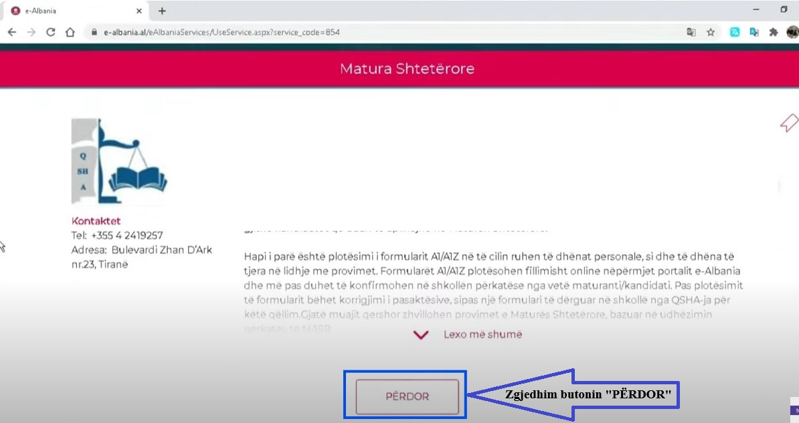
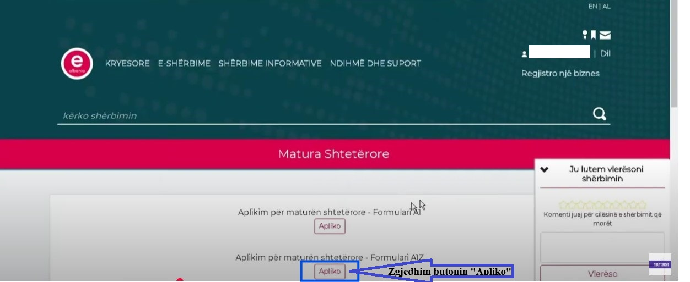
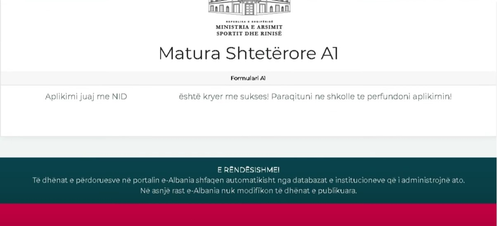

Figura 1 (hapni e_albania.al dhe zgjidhni butonin "Hyr")

Kujdes! Formulari A1Z plotësohet vetëm nga maturantët që kanë mbaruar gjimnazin në vitet e mëparshme, jo nga ata që janë aktualisht në vitin e fundit.
Figura 1 (hapni e_albania.al dhe zgjidhni butonin "Hyr")
Figura 2 (Zgjidhni menunë "Qytetar")

Figura 3 (Plotësoni kredencialet për tu loguar)

Figura 4 (Vendosni kodin që ju erdhi me SMS në telefon)

Figura 5 (Zgjidhni menunë "ARSIMI"

Figura 6 (Zgjidhni "MATURA SHTETËRORE")

Figura 7 (Zgjidhni përsëri "Matura Shtetërore")

Figura 8 (Zgjidhni butonin "Përdor")
Figura 9 (Zgjidhni butonin "Apliko")
Figura 10 (Plotësoni fushat e kërkuara në formular )

Figura 12 (Aplikimi përfundoi. Shkolla do të bëjë konfirmimin në datën e caktuar)
